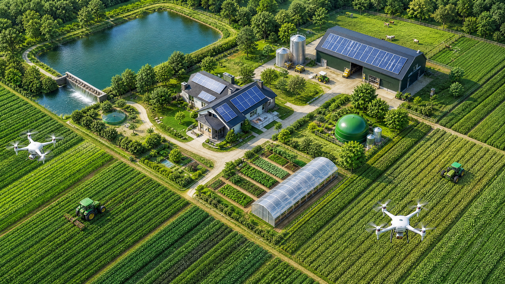
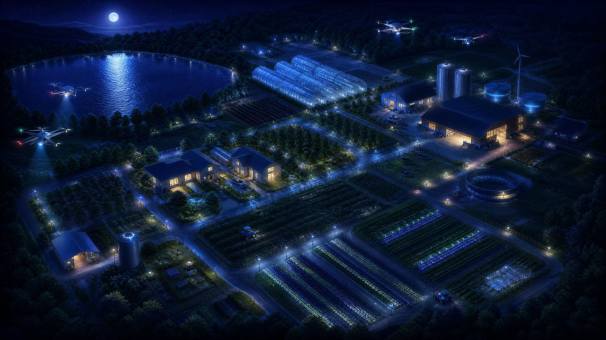
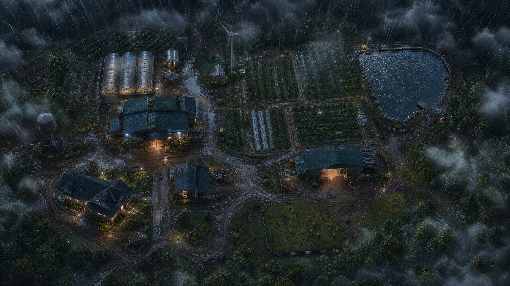

SISTEMA VIVO
O Futuro é |
A primeira metrópole agro-sustentável autônoma do mundo.



Terminal de IA Diagnóstica
Simulador: Analise a saúde da sua plantação em tempo real utilizando nossa rede neural.
Terminal de Resposta | Status: Aguardando...
Aguardando entrada de dados do usuário...
Desafio de Sustentabilidade
Proteja a fazenda de eventos climáticos extremos usando as tecnologias certas!
Aguardando Início...
EVENTO
Inicie o desafio para testar suas habilidades.
Pontuação: 0
Simulador de Impacto Global
0
0
0
Sua gestão está ajudando a resfriar o planeta em 0.00001°C por segundo.
STATUS DO SISTEMA
ENERGIA ESTÁVEL
BIODIVERSIDADE EM ALTA
RECURSOS OTIMIZADOS
CERTIFICADO AMBIENTAL
🏆
Explore todos os módulos para desbloquear seu selo de Gestor Ambiental.